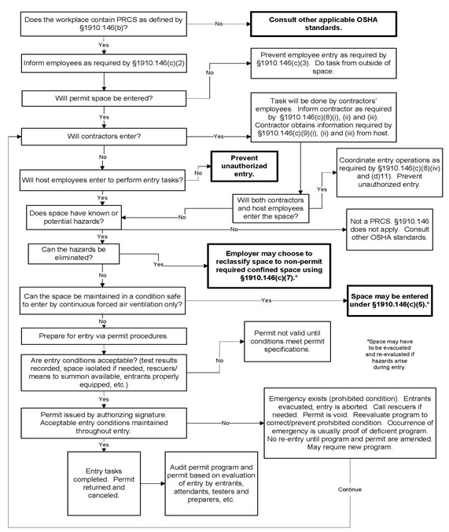

34.A General
34.A.01–34.A.05
34.A.01 Confined Spaces – Non-Marine Facilities. Confined space (CS) work performed in permanent, fixed facilities and/or performed on construction sites shall be performed in accordance with this Section, 29 CFR 1910.146 and ANSI Z117.1. This section does not regulate underground construction work (tunneling) as a confined space. > See Section 26.
34.A.02 USACE-conducted CS work activities on or in a watercraft or vessel of any kind and/or associated with vessel repair and maintenance operations are covered in Section 34.B.
34.A.03 The definitions for CS that are applicable to all CSs, during operations, maintenance and construction are listed in Appendix Q, Definitions.
34.A.04 Confined Space Identification. Facilities and job sites shall assign a Safety Supervisor or Confined Space Competent Person (CSCP) to identify all CSs and determine entry rules and requirements. > See Figure 34-1.
- On USACE facilities, all fixed permit-required CS (PRCS) shall be labeled as a PRCS. With the approval of the local Safety Office (SOHO), the CSCP may exclude from labeling those confined spaces that pose little or no hazard, (i.e., a navigation lock), but meet the strict definition of a permit-required confined space (PRCS).
- On construction sites and/or during O&M activities, all fixed PRCS shall be labeled as a danger. PRCS that are created as part of construction work shall be labeled and have a barrier to restrict entry. All Non Permit-Required Confined Spaces (NPRCS) created as part of construction and/or O&M activities are not required to be labeled.
- If activities in a NPRCS (i.e., welding), create or have a potential to create a hazardous atmosphere, that space shall be declared a PRCS.
- All previously identified CSs shall be identified in writing to any contract personnel prior to the beginning of work if they are required to enter and/or work in this area.
- The contract documents shall list any known hazards and controls in the CS.
- If it is known that work to be conducted inside a CS would create a possible hazardous atmosphere, the contractor shall be notified prior to beginning work and shall be required to follow the requirements for PRCS.
- All entry into an identified or contractor-created PRCS shall be coordinated with the GDA and site security or emergency personnel before each entry.
- For work conducted on military installations, the CSCP or designer shall coordinate with the installation CS program manager/team to identify all CSs and determine any specific installation requirements for entry.
34.A.05 Confined Space Entry (CSE) Procedures.
- PRCS Entry Procedures. Entry into PRCSs shall comply with the requirements of 29 CFR 1910.146.
- NPRCS Entry Procedures:
- There are no entry requirements if the space does not contain or have the ability to contain an atmospheric hazard capable of causing death or physical harm.
- If a NPRCS has an environment being controlled by permanent ventilation system and/or has an isolation barrier, then entry requires: continual air monitoring; the use of audible/visual alarms for failure of the ventilation system or isolation barrier; and training for the employees in visual contact with the CS and those working in the CS on the proper rescue procedures to be used shall be required. The alarm shall be capable of notifying both the entrants and rescue personnel. This shall be documented and written in the CSE Plan.
- PRCS Permit. The CSCP shall complete or review and sign the completed PRCS permit (see Form 34-1 for non-mandatory example) and shall be responsible for enforcing the use of PRCS permits for entry into all PRCSs at the facility/site.
- At the end of the work task where a PRCS was entered, there shall be an after action review by all parties on procedures used and if improvement can be gained. For USACE operations, this review should include safety personnel for the site, and any security or emergency responders. For contract operations, this review should include GDA and any security or emergency responders on site.
FIGURE 34-1
Confined Space Identification Flow Chart

{kind=link}